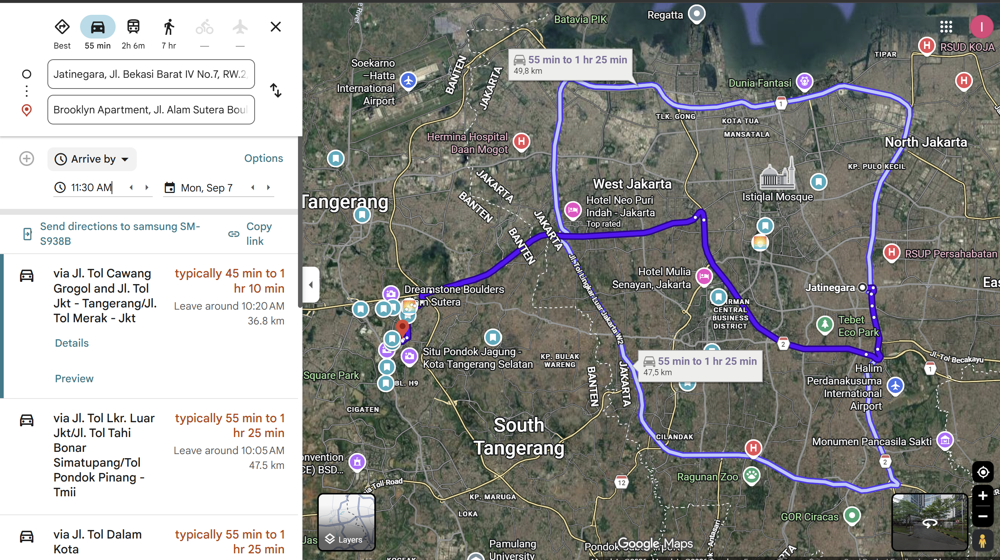

12:02 → 19:03
Billet confirmé (nom du train non noté — à vérifier sur le billet)
Jatinegara → gare de Lempuyangan (pas Tugu)
Départ hôtel ~10h20, viser une arrivée gare 11h30 (marge ~30 min avant le train).
Départ QG 2 · lundi 7 septembre
Billets achetés. Bandung est annulé : direction Yogyakarta depuis Alam Sutera, en milieu de matinée, sans réveil aux aurores.
12:02 → 19:03
Billet confirmé (nom du train non noté — à vérifier sur le billet)
Jatinegara → gare de Lempuyangan (pas Tugu)
Départ hôtel ~10h20, viser une arrivée gare 11h30 (marge ~30 min avant le train).
⚠️ Départ noté "12:02" — la marge visée (arrivée gare 11h30) est cohérente avec ça plutôt qu'avec 11:02, mais à reconfirmer sur le billet.

Billets achetés — plus la peine de réserver.